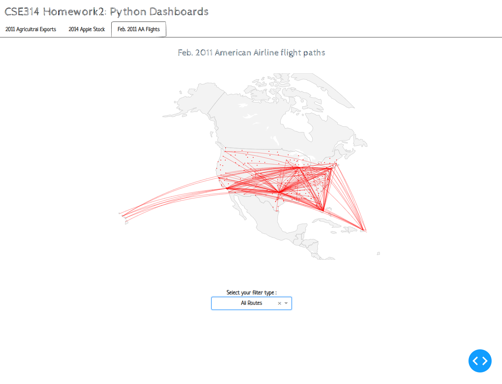

American Airlines Flight Path Dataset (2011)
For full dataset view 2011_february_aa_flight_paths.csv and 2011_february_us_airport_traffic.csv
Overview
-
Why the visualization is interesting?
- Dataset is visualized on a map.
- Users can choose filter types to view all flight paths, find flight paths by departure/arrival airports, or flight paths associated with AA hubs.
- This visualization includes a chained callback. Whenever a filter is selected, a checklist containing the filtered airports will appear for further selection.
Demo



Callbacks
generate_checklist_from_filter(filter_choice): - Generate a checklist of airports based on the filter type selection
Parameters:
- filter_choice: str a selected filter name from the dropdown list
- returns:
--str a list of airport codes that will be the options for the airport checklist
--str a list of airport codes that will be the default 'value' for the for the airport checklist
update_flight_map(filter_type, airport_choice): - Update the flight path map based on the current selected filter type and airport checklist selections
Parameters:
- filter_type: str a selected filter name from the dropdown list
- airport_choice: str a list of selected airport codes from the airport checklist
- returns: figure an updated flight path map that will be passed into the dcc.Graph component